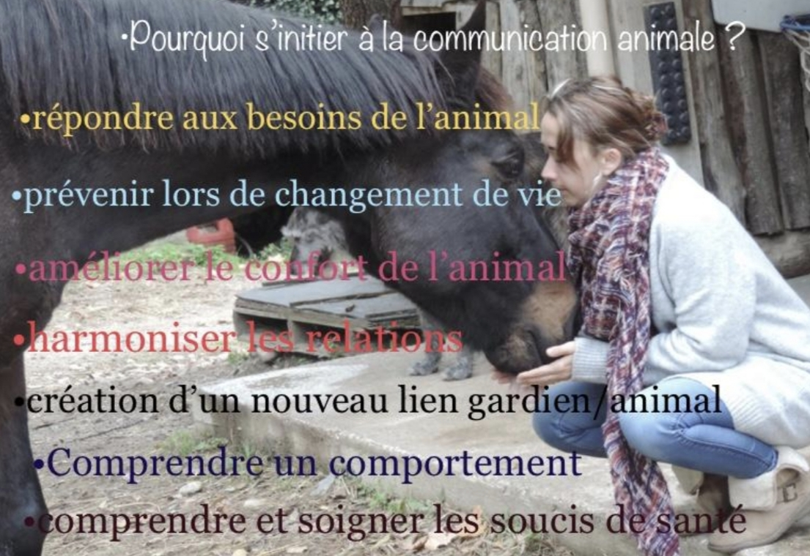
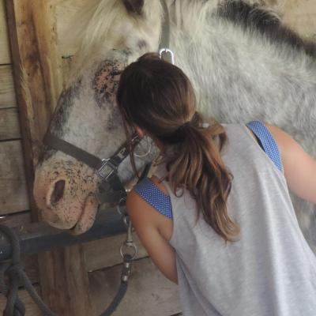

A la découverte de la communication avec les animaux
 Vous allez pouvoir avoir une approche de la communication intuitive avec les animaux. Le niveau I sera dédié à l'apprentissage de celle-ci. Tout se déroule sur un week-end complet.
La première après-midi alterne théorie et pratique : d'où vient la communication animale, diverses pratiques, ancrage, respiration, effet miroir, mental, et plus encore.
Le dimanche après-midi commence par l'approche de la communication intuitive avec les animaux défunts, suivie de pratique sur photos et en direct avec les animaux présents.
Vous découvrirez que ce n'est pas un don mais un langage oublié accessible à tous. Ce stage est aussi une forme de développement personnel : vous apprendrez sur les animaux, mais aussi sur vous-même.
Les différents modules ont lieu en Dordogne.
Tarifs :
- Week-end complet : 135€
- Journée unique : 75€
- Module soin 1 (initiation aux soins énergétiques) : 40€
La validation de votre inscription se fait à réception de la totalité du paiement ou des arrhes selon la formule choisie.
Les arrhes sont encaissées à réception et le solde deux semaines avant la date du stage. Les paiements sont non remboursables une fois encaissés.
Important : Les arrhes ne sont plus remboursées en cas d'annulation moins de 10 jours avant la date du stage.